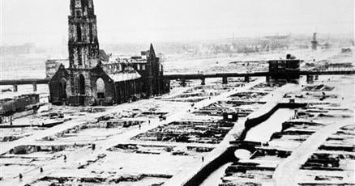

Betjeman
I'll admit it, John Betjeman's poem "Slough" made me chortle when I read it.
And this simulation lets you redirect aircraft towards a specific spot by careful spoofing of Knickebein beams.
But his jibe is far more sour now than in 1937 when he wrote the poem. We'll leave it at that.
And, in the words of the very wise David Brent [1]:
You don't solve town planning problems by dropping bombs all over the place.
That was also our experience here in The Netherlands.
I've grown up near Rotterdam, where a huge part of the city was completely wiped out by the Luftwaffe in 1940. There are photos of the aftermath that remind me of Hiroshima.
It's still a national trauma.

So, a clean slate restart after the bombs had come. But I don't think that Betjeman would have enjoyed the 1940s-1950s regrowth of Rotterdam. The new city design turned out uncharming: harsh boxes along windswept plains of traffic. A "car-centric wasteland", as Not Just Bikes calls such city design.
The not-human-scale city design style that so aggravated John Betjeman was "in the air" at the time; an unbombable mentality.
On the positive side: the worst of that fever of careless planning seems to have broken now in quite a few cities & countries, after they've experienced the ill effects for a number of decades. There is now far broader interest in urbanism, and awareness of what Betjeman was warning about.
(Which includes Rotterdam: that city has been incrementally but noticably beautifying both buildings and traffic infrastructure since the '90s.)
[1] (Zooming in on only this isolated quoted line, ignoring the actual point of that character sketch.)